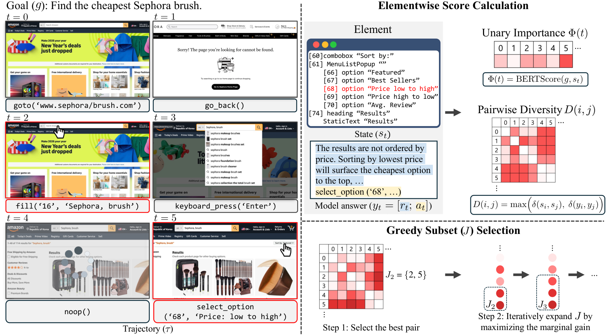
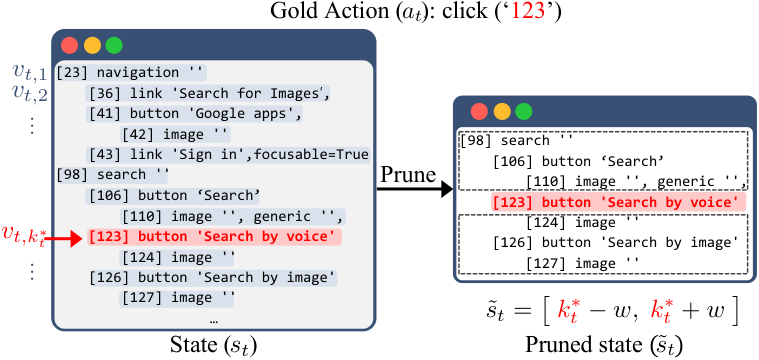
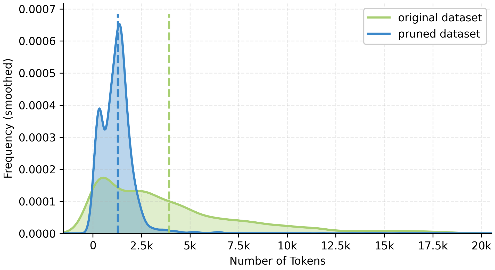

Abstract
Large language models (LLMs) have enabled web agents that follow natural language goals through multi-step browser interactions. However, agents fine-tuned on specific trajectories and domains often struggle to generalize out of domain, and offline training can be compute-inefficient due to noisy, redundant trajectories and long accessibility-tree (AXTree) states.
To address both issues, we propose Weasel, a trajectory selection method for offline training of web agents. Weasel selects a fixed-budget subset of trajectory steps by optimizing an objective that balances unary importance with pairwise diversity over states, websites, and interaction patterns, solving efficiently with a greedy algorithm. We further improve efficiency with action-centered AXTree pruning that keeps only content around the ground-truth action target, and we mitigate style mismatch for reasoning-native models by replacing expert traces with model-generated, style-consistent rationales.
Across AgentTrek and NNetNav training datasets, evaluations on WebArena, WorkArena, and MiniWob, and experiments with Qwen2.5-7B, Gemma3-4B, and Qwen3-8B, Weasel improves out-of-domain performance while reducing training cost, producing roughly 9.7–12.5× training speed-ups over standard fine-tuning.
Method Overview

Left: An example curated trajectory after applying Weasel. Although the original demonstration contains noisy ($t=4$) and erroneous ($t=0$) steps, Weasel retains only the most informative steps (highlighted in red).
Right: We compute an unary importance score $\Phi(t) = \text{BERTScore}(g, s_t)$ that measures semantic alignment between the goal $g$ and each step's state $s_t$, and a pairwise diversity score $D(i,j) = \max\!\bigl(\delta(s_i,s_j),\,\delta(y_i,y_j)\bigr)$ where $\delta(\cdot,\cdot)=1-\text{BERTScore}$ and $y_t=[r_t;a_t]$ is the reasoning–action pair. Greedy subset selection initializes with the best-scoring pair and incrementally adds the index with the largest marginal gain on the importance–diversity objective until the budget $T_0$ is met.
Subset selection objective
$\displaystyle \max_{J \subseteq \{0,\dots,T-1\}}\;\sum_{j \in J}\Phi(j)\;+\;\lambda\!\!\sum_{\substack{i\lt j\\ i,j\in J}}\!\!D(i,j)\quad\text{s.t.}\;|J|=T_0$
Although this max-sum diversification problem is NP-hard, a simple greedy algorithm is near-optimal in practice: it matches the exact optimum in over 96% of NNetNav trajectories, with a greedy/optimal objective ratio of $0.9999 \pm 0.0005$.
Target-Centered AXTree Pruning


A single linearized AXTree state in AgentTrek can reach 180K tokens: costly to train on, and most of those tokens are irrelevant to the expert's next action.
For node-grounded actions, we retain a contiguous window of length $2w+1$ centered at the gold target node $v_{t,k_t^\star}$, producing a compact pruned state $\tilde{s}_t$ that preserves the local context most useful for predicting the expert action. This is applied as a preprocessing step before Weasel's subset selection.
Pruning alone yields a 2× training speed-up at no extra inference cost, and our target-centered window outperforms prefix and semantic-ranking baselines under a matched 32% token budget.
Self-Reasoning Synthesis
Reasoning-native models (e.g. Qwen3) emit intermediate reasoning traces before final outputs. When the training corpus has reasoning traces produced by a different model, naive SFT introduces a style mismatch that can destabilize training and even drag performance below the base model.
To fix this, we replace the expert reasoning trace with a self-generated rationale produced by the same target model, conditioned on the goal, interaction history, pruned state, and the gold action, while keeping the original action supervision intact.
For Qwen3-8B on WebArena-Lite, self-reasoning is critical: SFT + RS lifts 15.8 → 17.6, and combining with Weasel's selection reaches 21.2, the highest result among all variants.
Zero-Shot Transfer Results
Agents are fine-tuned on AgentTrek and evaluated on WebArena-Lite, WebArena, MiniWob, and WorkArena without any in-domain training. Weasel delivers the best accuracy–efficiency trade-off across all three base models.
| Model | WebArena-Lite SR | WebArena SR | MiniWob SR | WorkArena L1 / L2 | Training Time | Speed-up |
|---|---|---|---|---|---|---|
| Qwen2.5-7B-Instruct | ||||||
| Base (no train) | 5.5 | 5.2 | 41.8 | 4.8 / 0.0 | n/a | n/a |
| + Full SFT (52K) | 10.9 | 8.7 | 44.6 | 12.1 / 0.4 | 136.0 hr | 1.0× |
| + Pruning + Random (10K) | 9.1 | 8.1 | 46.7 | 9.8 / 3.0 | 12.0 hr | 11.3× |
| + Pruning + LLM-Judge (10K) | 8.5 | 7.8 | 45.4 | 8.5 / 3.0 | 12.0 hr | 11.3× |
| + Weasel (10K) | 14.5 | 9.5 | 48.0 | 12.4 / 4.7 | 12.0 hr | 11.3× |
| Gemma3-4B-IT | ||||||
| Base (no train) | 6.7 | 2.7 | 27.4 | 3.6 / 0.0 | n/a | n/a |
| + Full SFT (52K) | 9.1 | 4.3 | 28.6 | 3.3 / 0.0 | 80.0 hr | 1.0× |
| + Pruning + Random (10K) | 8.5 | 4.7 | 29.4 | 2.4 / 2.1 | 6.4 hr | 12.5× |
| + Pruning + LLM-Judge (10K) | 6.7 | 5.2 | 29.3 | 4.5 / 2.1 | 6.4 hr | 12.5× |
| + Weasel (10K) | 11.5 | 5.5 | 30.6 | 4.5 / 3.0 | 6.4 hr | 12.5× |
| Qwen3-8B (reasoning-native) | ||||||
| Base (no train) | 16.4 | 18.0 | 61.1 | 35.2 / 1.7 | n/a | n/a |
| + Full SFT (52K) | 17.7 | 18.2 | 59.4 | 33.3 / 2.1 | 88.5 hr | 1.0× |
| + Pruning + Random (10K) | 16.5 | 17.5 | 61.4 | 33.9 / 3.4 | 7.0 hr | 12.6× |
| + Pruning + LLM-Judge (10K) | 19.4 | 16.6 | 61.9 | 35.2 / 3.8 | 7.0 hr | 12.6× |
| + Weasel (10K) | 21.2 | 19.2 | 61.9 | 38.8 / 4.3 | 8.3 hr | 10.7× |
Robustness Across Datasets: NNetNav-Live
Replacing AgentTrek with the real-world NNetNav-Live training set, Weasel remains the strongest method, with a 9.7× training speed-up over the 52K full run.
| Qwen2.5-7B-Instruct | WebArena-Lite | WebArena | MiniWob | WorkArena L1 | WorkArena L2 | Speed-up |
|---|---|---|---|---|---|---|
| Base (no train) | 5.5 | 5.2 | 41.8 | 4.8 | 0.0 | n/a |
| + Full SFT (52K) | 10.9 | 6.9 | 38.9 | 5.2 | 6.4 | 1.0× |
| + Pruning + Random (10K) | 10.3 | 7.4 | 32.3 | 7.0 | 6.0 | 9.7× |
| + Weasel (10K) | 12.1 | 8.3 | 41.8 | 7.6 | 6.8 | 9.7× |
Ablation
WebArena-Lite SR (Qwen2.5-7B, 10K subset of AgentTrek).
Importance × Diversity is complementary
Combining the unary importance term $\Phi$ with the pairwise diversity term $D$ outperforms either alone.
State + answer diversity
Diversifying over both states and reasoning–action pairs via a max-composition is best.
BibTeX
@inproceedings{pesaranzadeh2026weasel,
title = {{WEASEL}: Out-of-Domain Generalization for Web Agents via Importance-Diversity Data Selection},
author = {Pesaran zadeh, Fatemeh and Choi, Seyeon and L\`u, Xing Han and Reddy, Siva and Kim, Gunhee},
booktitle = {Proceedings of the 43rd International Conference on Machine Learning (ICML)},
year = {2026}
}